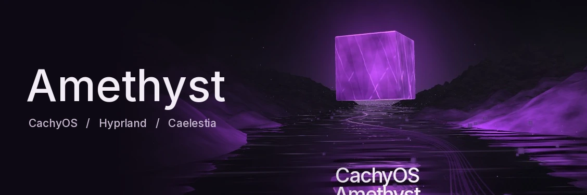

<!doctype html><html lang="en"><meta charset="utf-8"><meta name="viewport" content="width=device-width,initial-scale=1"><title>CachyOS Amethyst</title><style>html{color-scheme:dark}body{background:#100b15;color:#f4edf7;font:1.1rem/1.6 system-ui,sans-serif;margin:0}main{max-width:68rem;margin:10vh auto;padding:1rem}img{width:100%;height:auto}a{color:#e1b0ff}</style><main><p>The interactive showcase is being published.</p><a href="https://github.com/Denoax/cachyos-amethyst-dotfiles">Explore the dotfiles on GitHub</a></main></html>